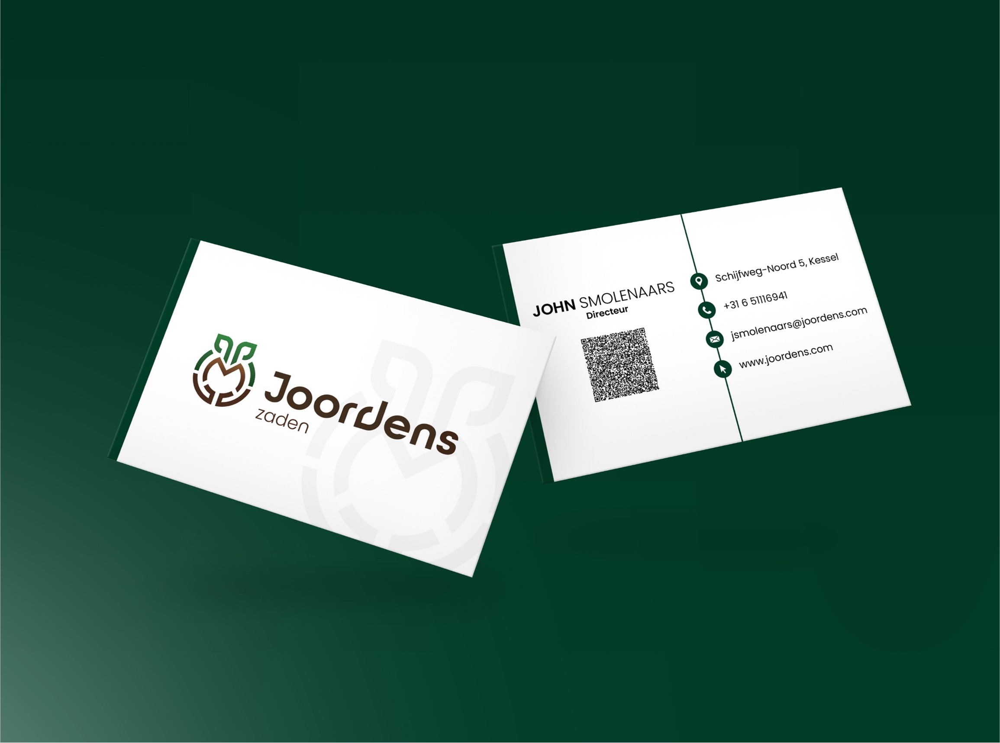
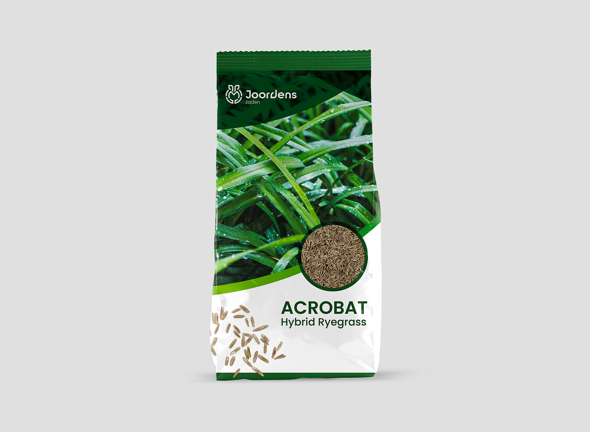
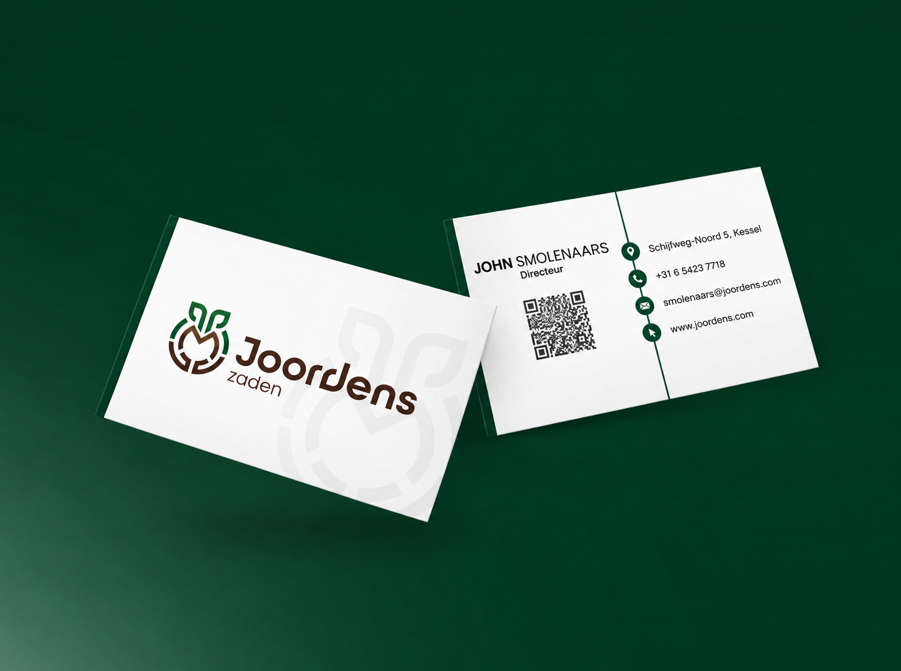
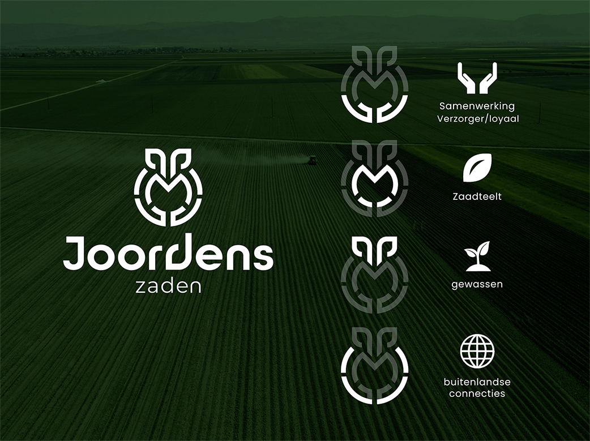
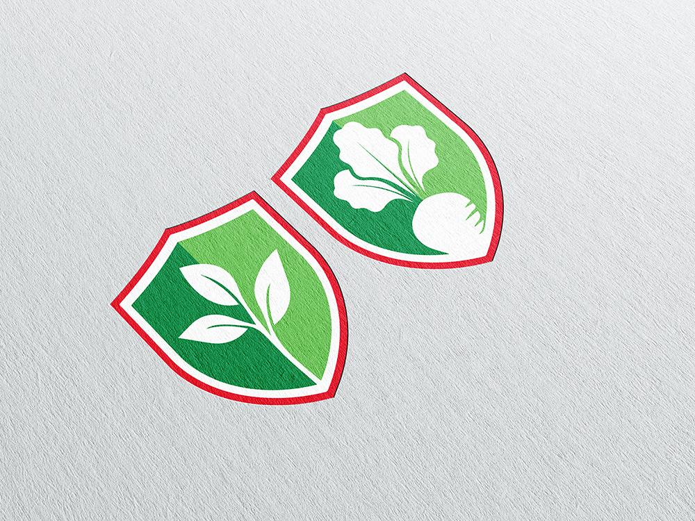

Joordens Zaden

De opdracht
Bij Joordens Zaden geloven ze dat een betere bodem de basis vormt voor een duurzamere en winstgevendere landbouw. De bodem is waar gewassen rusten, ademen en gedijen, en daar richten zij zich op. Ze willen alles weten over de bodem, de uitdagingen en de ambities van de boer, met als doel niet alleen de eerstvolgende oogst te verbeteren, maar ook de oogsten daarna.
Als Nederlandse tak van het Franse moederbedrijf RAGT wilde de opdrachtgever zich nadrukkelijker onderscheiden met een eigen huisstijl, een nieuwe visuele identiteit die vervolgens ook aan het moederbedrijf in Frankrijk gepresenteerd kon worden.
Aanpak & resultaat
Ik ontwikkelde twee logo-concepten die de kernwaarden van Joordens Zaden, vertalen naar een herkenbaar beeldmerk. Vanuit het gekozen concept werkte ik een aantal uitingen uit om te laten zien hoe de nieuwe huisstijl er in de praktijk uit zou zien, van drukwerk tot digitale toepassingen.
Het resultaat is een huisstijl die recht doet aan de bodemgerichte, samenwerkingsgerichte visie van Joordens Zaden, en die de Nederlandse tak een eigen gezicht geeft naast het moederbedrijf.




